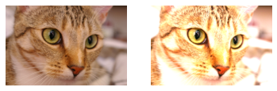
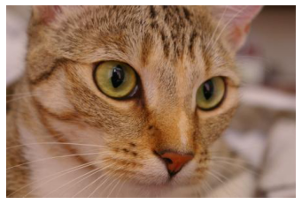
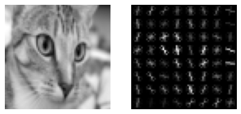
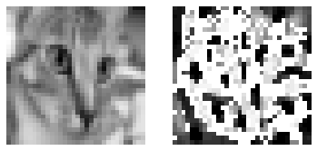

from skimage.exposure import rescale_intensity
import numpy as np
from skimage.data import chelsea
from matplotlib.pyplot import subplot, imshow, axis
from matplotlib import pyplot as plt
example_img = chelsea()Traitement d’image basique avec scikit-image
Chargement des données pour les tests
Changer linéairement la radiométrie : (minimum, maximum) -> (nouveau_minimum, nouveau_maximum)
subplot(1,2,1)
# "image" -> calcule le min et le max de l'image
imshow(rescale_intensity(example_img, in_range="image", out_range=np.uint8))
axis("off")
subplot(1,2,2)
imshow(rescale_intensity(example_img, in_range=(0,128), out_range=np.uint8))
axis("off")(-0.5, 450.5, 299.5, -0.5)
Entrée/sortie : écriture et lecture des fichiers
from skimage.io import imread, imsave
tmp_img_path = "/tmp/chelsea.jpg"
imsave(tmp_img_path, example_img)
reloaded_img = imread(tmp_img_path)
imshow(reloaded_img)
axis("off")(-0.5, 450.5, 299.5, -0.5)
Descripteurs
Il est courant de vouloir calculer des descripteurs sur les images pour faire de l’apprentissage. Les fonctions permettent de le faire avec des techniques classiques.
from skimage.transform import resize
from skimage.color import rgb2grayDAISY
from skimage.feature import daisy
im = resize(rgb2gray(chelsea()), (256,256))
descs, descs_img = daisy(im, step=64, radius=58, rings=2, histograms=6,
orientations=8, visualize=True)HOG
from skimage.feature import hog
im = chelsea()
im = resize(rgb2gray(im), (64,64))
fd, hog_image = hog(im, orientations=8, pixels_per_cell=(8, 8),
cells_per_block=(1, 1), visualize=True, multichannel=False)
subplot(1,2,1)
imshow(im, cmap=plt.cm.gray)
axis("off")
# Rescale histogram for better display
hog_image_rescaled = rescale_intensity(hog_image, in_range=(0, 10))
subplot(1,2,2)
imshow(hog_image_rescaled, cmap=plt.cm.gray)
axis("off")(-0.5, 63.5, 63.5, -0.5)
LBP
from skimage.feature import local_binary_pattern
# settings for LBP
radius = 3
n_points = 8 * radius
image = resize(rgb2gray(chelsea()), (32, 32))
lbp = local_binary_pattern(image, n_points, radius, "uniform")
subplot(1,2,1)
imshow(image, cmap=plt.cm.gray)
axis("off")
subplot(1,2,2)
imshow(lbp, cmap=plt.cm.gray)
axis("off")(-0.5, 31.5, 31.5, -0.5)
Haar features pour Viola Jones
from skimage.feature import haar_like_feature_coord, haar_like_feature
from skimage.transform import integral_image
feature_types = ['type-2-x', 'type-2-y',
'type-3-x', 'type-3-y',
'type-4']
im = resize(rgb2gray(chelsea()), (32, 32))
img_ii = integral_image(im)
# Extract all possible features
feature_coord, feature_type = haar_like_feature_coord(width=im.shape[0], height=im.shape[1],
feature_type=feature_types)
print(f"Number of haar feature : {feature_coord.shape[0]}")
# Limiting feature for convenience reasons
# This example should run fast :smile:
feature_coord = feature_coord[:256]
feature_type = feature_type[:256]
feats = haar_like_feature(img_ii, 0, 0, img_ii.shape[0], img_ii.shape[1], feature_type=feature_type, feature_coord=feature_coord)
print(f"Extracted features: {feats.shape}")Number of haar feature : 509270
Extracted features: (256,)Pour aller plus loin, voir Haralick